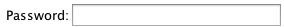
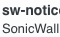
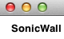
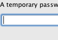
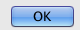

import javax.swing.JOptionPane as JOptionPane import javax.swing.JPasswordField as JPasswordField # ask user input his vpn password jPasswordField = JPasswordField() switchApp("Sikuli IDE") result = JOptionPane.showConfirmDialog(None, jPasswordField, "Please input vpn password", JOptionPane.OK_CANCEL_OPTION); if result == 0: # open app vpnapp = App("NetExtender") vpnapp.open() wait(, 60) type(, jPasswordField.text) click() sparrowApp = App("Sparrow") sparrowApp.open() wait(, 90) doubleClick() wait(, 90) re = find().offset(Location(100, 0)).nearby(5) doubleClick(re) type("c", KeyModifier.CMD) vpnapp.focus() click() type("v", KeyModifier.CMD) click()